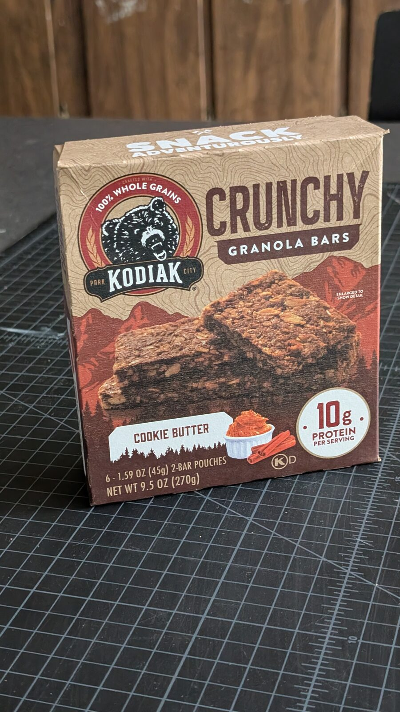
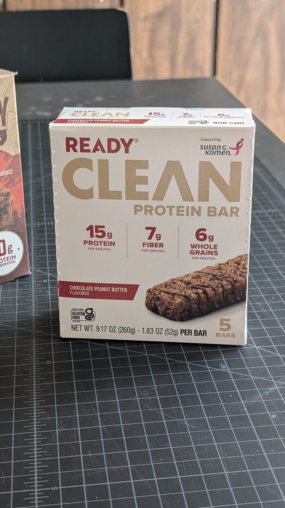
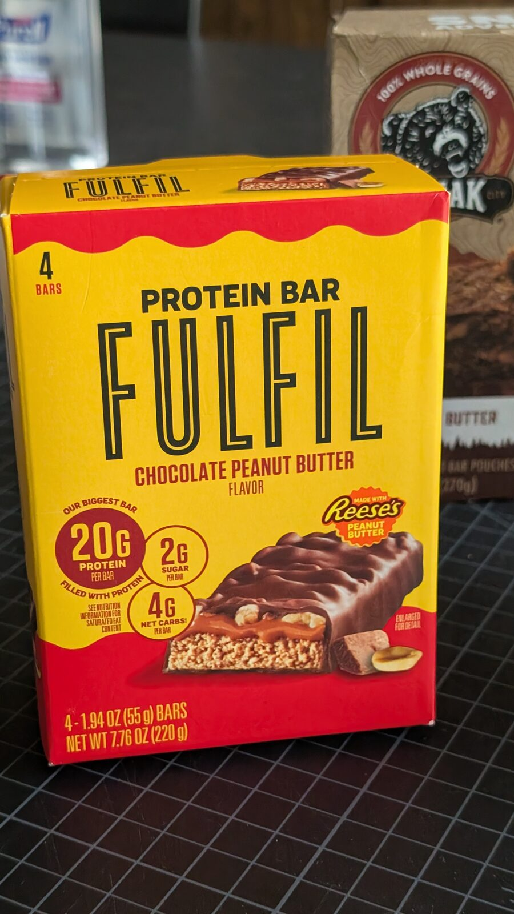
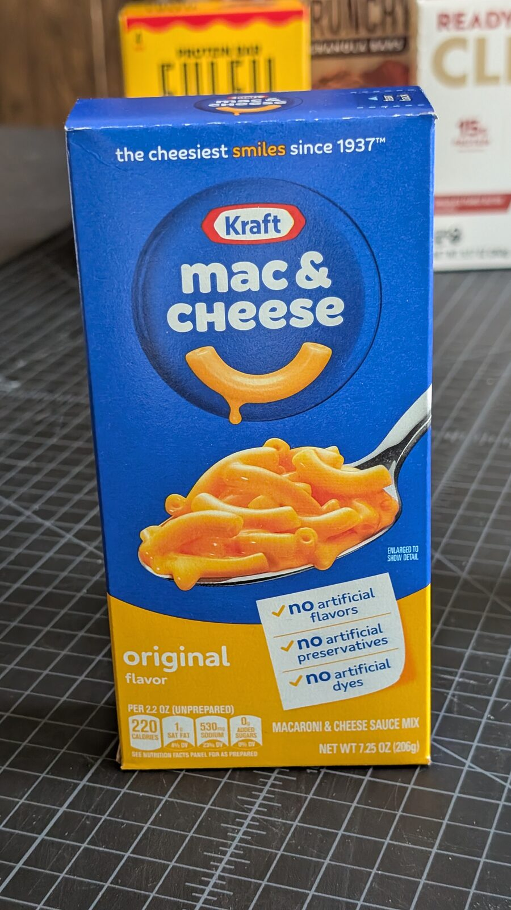
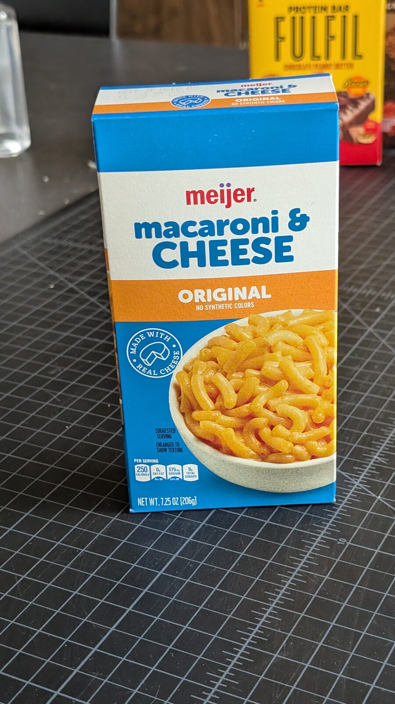
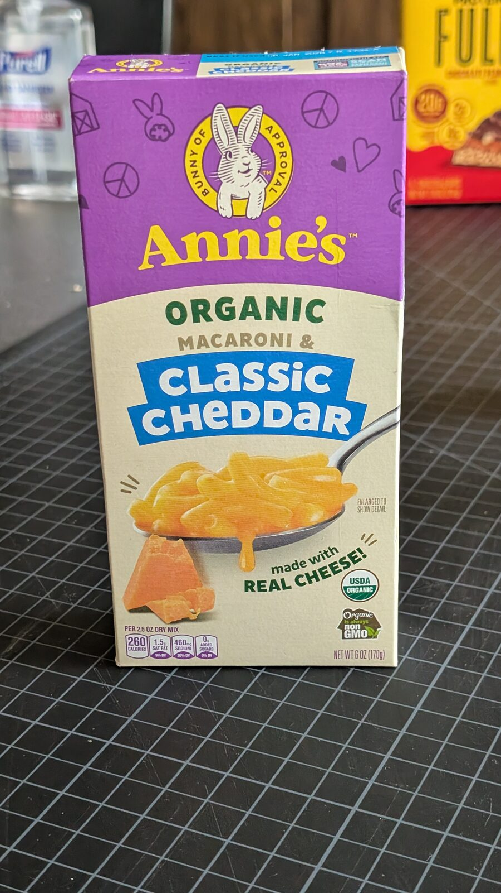
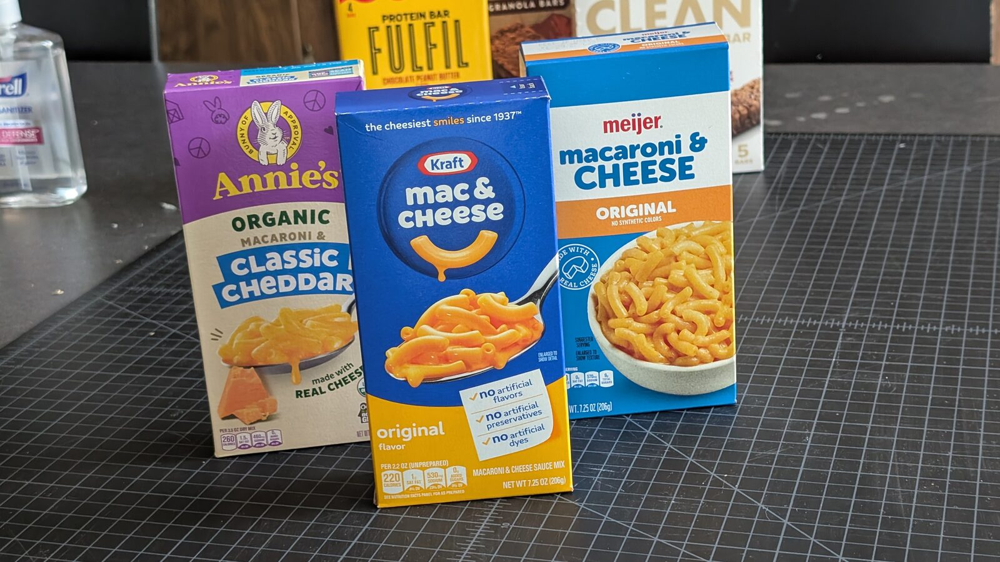

Shelf impact
DSGN 312 · Week 2 · Read this before the session — about 25 minutes
Terms follow the Glossary.
Two metres, then arm's length
A package is read twice, on two different surfaces, by the same person about four seconds apart.
The first read happens at distance, in a row of competitors, before the person has decided to be interested. What survives: mass, colour block, silhouette, contrast against the neighbours. What does not: type below a certain size, fine texture, most photography, anything subtle.
The second read happens in the hand, once they have picked it up. Now the small type is legible, the material has a feel, the back panel exists.
These are different design problems and most packages are designed only for the second. You can tell, because they look excellent on a screen at 100% and disappear on a shelf.
Hierarchy is a ranking, not a layout
You have been taught hierarchy on a page. The definition does not change: what is read first, second, third.
What changes is that on packaging it is a claim about a specific panel, at a specific distance, and the order is different at each distance.
A package might read:
- At two metres: colour block → silhouette → the largest word
- In the hand: product name → flavour or variant → the claim → the ingredients
If those two orders are not both deliberate, one of them is an accident.
How to test a hierarchy
Ask somebody to number it. Hand them the package or the photograph and ask what they see first, second, third.
If two people number it differently, the hierarchy is not doing its job — and that disagreement is a finding, not a failed exercise. A hierarchy everybody reads the same way is one that works.
Contrast is always against something
This is the week's central discipline and the hardest habit to acquire.
"It stands out because it's bold."
Bold compared to what? If every package in the row is bold, bold is the background.
Contrast is a relationship. Naming it means naming the other term.
| Not an explanation | An explanation |
|---|---|
| "It's eye-catching" | "It's the only matte surface in a row of gloss, so it holds still while the others glare" |
| "Cleaner design" | "It carries four elements where the neighbours carry eleven, so the name is legible at two metres and theirs are not" |
| "More premium" | "It's the only one with no photograph, in a category where everyone photographs the food" |
| "Better colour" | "It's the only warm colour in a run of blues and greens" |
Every sentence on the right names what the contrast is against. That is the whole difference.
Why the sealed prediction matters
You wrote down which package you noticed first, before analysing anything.
The useful case is when the package you noticed is not the one you would defend. That gap — noticing something you do not admire — is the clearest possible demonstration that shelf impact is mechanical rather than a matter of taste. It happens to most people and it is worth arriving having experienced it.
What distance does
| Survives two metres | Does not |
|---|---|
| Colour mass and proportion | Type below roughly 24 pt equivalent |
| Silhouette and structure | Fine texture and pattern detail |
| High-contrast shapes | Most photography — it turns to mush |
| Empty space | Anything relying on fine tonal difference |
Empty space is the underrated one. In a row where everything is full, the package with room around its name is the one you can read.
Material is a visual variable
Week 4's swatches come back with a different question attached.
- Matte holds still under retail lighting. Gloss glares, and under a spotlight the glare can obliterate the name entirely.
- Uncoated board takes ink duller — colours read quieter and warmer, which is why "natural" brands use it and why a vivid design on uncoated stock disappoints.
- Foil and metallics are contrast at distance and can be illegible up close from the same reflection that made them visible.
If you chose your material for structural reasons in week 4, this is where you find out what it also did to your surface.
Vocabulary this week owns
| Term | What it means here |
|---|---|
| First read | What the eye takes first, at the distance the package is actually seen from. Changes between two metres and the hand |
| Hierarchy | The ranked order things are read in, on a named panel at a named distance. Testable by asking somebody to number it |
| Contrast | A relationship, always against something specific. Matte in a gloss row is contrast. Bold is not |
Self-check
- Why are the two reads different design problems? (Two metres, then arm's length)
- Your shelf photograph — number the hierarchy at distance. Now imagine it in your hand. Does the order change? (Hierarchy is a ranking)
- Rewrite "it looks more premium" as a contrast statement. What did you have to add? (Contrast is always against something)
- Two people number a hierarchy differently. What have you learned? (How to test a hierarchy)
- Name one thing that survives at two metres and one that does not. (What distance does)
- Your sealed answer — is the package you noticed first the one you would defend as best designed? If not, why not?
Bring to the session
- Your shelf photograph, whole row, from about two metres.
- Your sealed answer, unopened.
What this looked like in class
These are the actual packages we took apart. Every one of them was bought in the same trip.
The section, before anything is picked up

This is the shot you take first. Stand back far enough that a whole row is in frame. Everything a package does, it does here — next to forty others, under retail lighting, at a distance, with somebody standing in front of half of them.
Notice before you read further: which box did your eye land on? That is the answer to seal.
The three bars that came home

Kodiak. Bear mark upper left in a red roundel. The product is photographed on the front rather than hidden behind scenery. The logo is detailed and illustrative where tech branding pushes simplify, simplify — it reads as deliberate and handcrafted. Uncoated stock, so it feels natural in the hand. 10g protein, and 10g of sugar you only find by turning it over.

Ready Clean. Picked up because it was different — quiet and white in a row of loud and colourful. In that context, quiet was the contrast. White box plus restrained type reads as healthy; the same instinct that makes people reach for the white Monster can. It also carries a cause mark, Susan G. Komen — a trust signal doing work no nutrition claim can.
Note the naming problem we hit: is the product called Ready or Clean? CLEAN is set far larger, but READY has the registered trademark, the red, and the upper-left corner. Size does not win. Contrast and position do.

Fulfil. Borrows equity from another brand entirely — made with Reese's Peanut Butter. Loudest box of the three, and the least "natural" looking. It carries 20g protein and 2g sugar, better on both counts than the box that looks wholesome.

Together is where it gets useful. Three answers to the same question. Loud borrowed equity, outdoor craft, and clinical white. Each one is aimed at a different person, and none of them is aimed at everybody.
The mac and cheese, and the price ladder

Kraft — $1.29. The one that stood out most, and not because the package does more. You already know it. That blue is nearly as owned as Coca-Cola red, the noodle is drawn as a smile, and the cheesiest smiles since 1937 is doing the work of forty years of advertising. Even the standby now leads with no artificial flavors, preservatives or dyes.

Meijer store brand — $0.79. Same blue-and-orange family, deliberately. We read both ingredient lists side by side: enriched macaroni, wheat flour, durum flour, niacin, reduced iron, thiamine mononitrate, riboflavin, cheese sauce, whey, milkfat. Effectively identical.
You will rarely see a Meijer mac and cheese commercial. You will absolutely see a Kraft one — and that is what the extra fifty cents buys.

Annie's — $3.79. Cool colours and a cream ground against everyone else's warm blue and orange. The Bunny of Approval, whose ears read almost as a peace sign. "Classic Cheddar" stated plainly with a photograph clear enough that you know exactly which noodle you are getting — where the others leave the shape ambiguous. Made with real cheese is not a throwaway line: Kraft singles are legally a cheese food product, not cheese.

The ladder, in one frame.
| Product | Price | Aimed at |
|---|---|---|
| Meijer store brand | $0.79 | Watching every dollar |
| Kraft | $1.29 | The broad middle, buying certainty |
| Annie's organic | $3.79 | Not looking closely at spend, caring about sourcing |
Same category. Three different customers. That spread is a market segmentation strategy sitting on a shelf — and it is the thing to notice when you get to your own two sections.